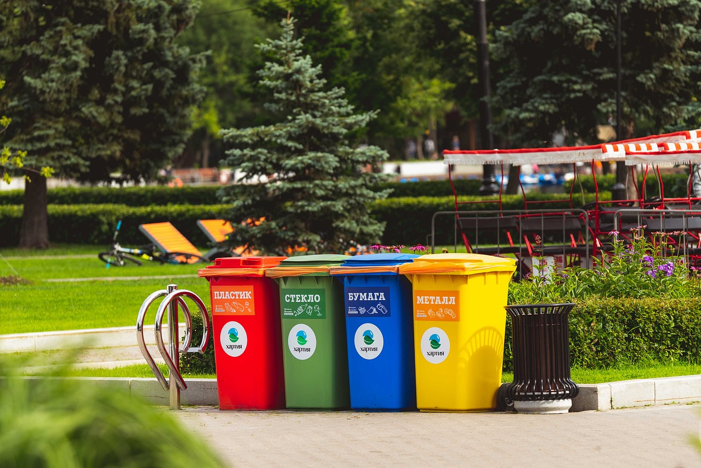

Gestão de Resíduos Sólidos e Elaboração de PGRS
O gerenciamento adequado dos resíduos sólidos é essencial
para a conformidade ambiental das empresas, a redução
de desperdícios e a melhoria dos processos produtivos.
A Política Nacional de Resíduos Sólidos (Lei nº 12.305/2010)
estabelece diretrizes para a gestão e o gerenciamento
de resíduos, incluindo a prevenção, a redução, a reutilização,
a reciclagem, o tratamento e a destinação final
ambientalmente adequada.
A Império Ambiental oferece consultoria para elaboração
de Planos de Gerenciamento de Resíduos Sólidos (PGRS),
Planos de Gerenciamento de Resíduos de Serviços de Saúde
(PGRSS), Planos de Gerenciamento de Resíduos da
Construção Civil (PGRCC) e projetos de compostagem.
Com sede em Cornélio Procópio, atendemos empresas
e empreendimentos do Norte do Paraná, incluindo
Londrina e Maringá, além de avaliar demandas
de outras regiões.
Serviços de Gestão de Resíduos
Materiais Institucionais
Precisa Elaborar um PGRS?
Entre em contato para conhecer nossos serviços de gerenciamento e regularização ambiental de resíduos.
(43) 9 2001-1726

Planos de Gerenciamento e Consultoria em Resíduos Sólidos
Conheça os serviços de elaboração de planos, orientação técnica e gerenciamento de resíduos oferecidos pela Império Ambiental.
Plano de Gerenciamento de Resíduos Sólidos (PGRS)
O PGRS é um instrumento de planejamento e controle do gerenciamento dos resíduos gerados por determinadas atividades e empreendimentos. Sua elaboração envolve a identificação dos resíduos, a avaliação das formas de acondicionamento, armazenamento, transporte, tratamento e destinação, conforme as exigências aplicáveis. A Império Ambiental presta assessoria para elaboração e atualização de PGRS.
Plano de Gerenciamento de Resíduos de Serviços de Saúde (PGRSS)
O PGRSS estabelece procedimentos para o gerenciamento dos resíduos provenientes de atividades de serviços de saúde, considerando sua classificação, segregação, acondicionamento, coleta, armazenamento, transporte, tratamento e destinação. Prestamos consultoria técnica para elaboração e adequação desses planos conforme as normas e exigências pertinentes.
Plano de Gerenciamento de Resíduos da Construção Civil (PGRCC)
O PGRCC é voltado ao gerenciamento dos resíduos gerados em obras, reformas, demolições e outras atividades da construção civil. O plano contempla medidas para classificação, segregação, armazenamento, transporte e destinação ambientalmente adequada dos resíduos, de acordo com as exigências aplicáveis. Oferecemos assessoria para elaboração de PGRCC.
Projetos de Compostagem
A compostagem é uma alternativa de tratamento biológico de resíduos orgânicos, permitindo sua transformação em material estabilizado, conforme as características do processo. Elaboramos projetos e oferecemos orientação técnica para soluções de compostagem, considerando as condições e necessidades de cada empreendimento.
Consultoria em Gestão de Resíduos Sólidos
A gestão adequada de resíduos contribui para o controle ambiental das atividades, o uso eficiente de recursos e o atendimento das obrigações legais. A Império Ambiental auxilia empresas na identificação de necessidades, organização de procedimentos e planejamento de ações para melhoria do gerenciamento de resíduos sólidos.
Regularização Ambiental e Gestão de Resíduos
O gerenciamento de resíduos pode estar relacionado a obrigações previstas em licenças e autorizações ambientais de determinados empreendimentos. Além da elaboração dos planos de resíduos, a Império Ambiental oferece serviços de licenciamento ambiental e assessoria para regularização de atividades.
Sua Empresa Precisa de PGRS, PGRSS ou PGRCC?
Entre em contato com a Império Ambiental e apresente as necessidades do seu empreendimento.
Falar com um Consultor